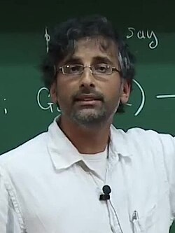

Akshay Venkatesh | |
|---|---|
 Venkatesh in 2014 | |
| Born | 1981 (age 44–45) New Delhi, India |
| Alma mater | Princeton University University of Western Australia |
| Known for | Mathematical work, former child prodigy |
| Spouse | Sarah Paden |
| Awards | Salem Prize (2007) SASTRA Ramanujan Prize (2008) Infosys Prize (2016) Ostrowski Prize (2017) Fields Medal (2018) |
| Scientific career | |
| Fields | Mathematics |
| Institutions | Institute for Advanced Study (2005–2006, 2018–present) Stanford University (2008–2018) Courant Institute of Mathematical Sciences (2006–2008) |
| Peter Sarnak | |
Akshay Venkatesh FRS (born 1981) is an Australian mathematician and a professor (since 15 August 2018) at the School of Mathematics at the Institute for Advanced Study, Princeton.[1] His research interests are in the fields of counting, equidistribution problems in automorphic forms and number theory, in particular representation theory, locally symmetric spaces, ergodic theory, and algebraic topology.
He was the first Australian to have won medals at both the International Physics Olympiad and International Mathematical Olympiad, which he did at the age of 12. In 2018, he was awarded the Fields Medal for his synthesis of analytic number theory, homogeneous dynamics, topology, and representation theory. He is the second Australian and the second person of Indian descent to win the Fields Medal. He was on the Mathematical Sciences jury for the Infosys Prize in 2020.
Akshay Venkatesh was born in New Delhi to a Tamil family in India, in 1981.[2] His family emigrated to Perth in Western Australia when he was two years old. He attended Scotch College. His mother, Svetha, is a computer science professor at Deakin University. A child prodigy, Akshay attended extracurricular training classes for gifted students in the state mathematical olympiad program,[3] and in 1993, whilst aged only 11, he competed at the 24th International Physics Olympiad in Williamsburg, Virginia, winning a bronze medal.[4] The following year, he switched his attention to mathematics and, after placing second in the Australian Mathematical Olympiad,[5] he won a silver medal in the 6th Asian Pacific Mathematics Olympiad,[6] before winning a bronze medal at the 1994 International Mathematical Olympiad held in Hong Kong.[7][8]
He also completed his secondary education 1994, turning 13 before entering the University of Western Australia as its youngest ever student. Venkatesh completed the four-year course in three years and became, at 16, the youngest person to earn First Class Honours in pure mathematics from the university.[7] He was awarded the J. A. Woods Memorial Prize as the most outstanding graduate of the year from the Faculties of Science, Engineering, Dentistry, or Medical Science.[9][10] While at UWA he was also one of the founding members of the Honours Cricket Association.[11]
Venkatesh commenced his PhD at Princeton University in 1998 under Peter Sarnak, which he completed in 2002,[12] producing the thesis "Limiting forms of the trace formula". He was supported by the Hackett Fellowship for postgraduate study.
After completing his PhD, Venkatesh was awarded a postdoctoral position at the Massachusetts Institute of Technology, where he served as a C.L.E. Moore instructor. He then held a Clay Research Fellowship from the Clay Mathematics Institute from 2004 to 2006,[12] and was an associate professor at the Courant Institute of Mathematical Sciences at New York University.[13][14] He was a member of the School of Mathematics at the Institute for Advanced Study (IAS) from 2005 to 2006. He became a full professor at Stanford University on 1 September 2008.[13]
After serving as distinguished visiting professor at the IAS in 2017–2018,[13] he became a permanent faculty member of IAS in August 2018.[15]
Venkatesh was awarded the Salem Prize, given to a "young mathematician judged to have done outstanding work in Salem's field of interest—the theory of Fourier series"[16] and the Packard Fellowship in 2007. In 2008, he received the US$10,000 SASTRA Ramanujan Prize, given for "outstanding contributions to areas of mathematics influenced by the great Indian mathematician, Srinivasa Ramanujan" and "only awarded to those under the age of thirty-two (the age of Ramanujan at his time of death)."[7][17] The prize was presented at the International Conference on Number Theory and Modular Forms, held at SASTRA University in Kumbakonam, Ramanujan's hometown.[17] In 2010, he was an invited speaker at the International Congress of Mathematicians (Hyderabad) and spoke on the topic "Number Theory and Lie Theory and Generalisations."[18] For his exceptionally wide-ranging, foundational and creative contributions to modern number theory, Venkatesh was awarded the Infosys Prize in Mathematical Sciences[19] in 2016.[20] In 2017 he received the Ostrowski Prize,[21] which is awarded every two years for "outstanding achievements in pure mathematics and in the foundations of numerical mathematics."[22]
In 2018, he was awarded the Fields Medal,[23][24] commonly described as the Nobel Prize of mathematics,[25] becoming the second Australian (after Terence Tao)[26] and the second person of Indian descent (after Manjul Bhargava)[27] to be so honoured. The short citation for the medal declared that Venkatesh was being honoured for "his synthesis of analytic number theory, homogeneous dynamics, topology, and representation theory, which has resolved long-standing problems in areas such as the equidistribution of arithmetic objects."[28] University of Western Australia Professor Michael Giudici said of his former classmate's work that "[i]f it was easy for me to explain, then he wouldn't have received the Fields Medal".[25] Australian mathematician and media personality Adam Spencer said that "[t]his century will be built by mathematicians, whether it's computer coding, algorithms, machine learning, artificial intelligence, app design and the like" and that "we should acknowledge the magnificence of the mathematical mind."[24] Director of the Australian Mathematical Sciences Institute Professor Geoff Prince said "Akshay is an exciting and innovative leader in his field whose work will continue to have wide-ranging implications for mathematics" and a worthy recipient of the Fields medal "given his contribution to improving mathematicians' understanding of analytic number theory, algebraic number theory, and representation theory".[29]
The long citation for his Fields Medal describes Venkatesh as having "made profound contributions to an exceptionally broad range of subjects in mathematics" and recognises that he "solved many longstanding problems by combining methods from seemingly unrelated areas, presented novel viewpoints on classical problems, and produced strikingly far-reaching conjectures."[28][30] Venkatesh's "use of dynamics theory, which studies the equations of moving objects to solve problems in number theory, which is the study of whole numbers, integers and prime numbers" was recognised in the award.[26] "His work uses representation theory, which represents abstract algebra in terms of more easily-understood linear algebra, and topology theory, which studies the properties of structures that are deformed through stretching or twisting, like a Möbius strip."[26] He described his work in 2016 as "looking for new patterns in the arithmetic of numbers".[26] On receiving the award, which is presented every four years, Venkatesh said "A lot of the time when you do math, you're stuck, but at the same time there are all these moments where you feel privileged that you get to work with it. You have this sensation of transcendence, you feel like you've been part of something really meaningful."[26]
He was elected as a Fellow of the American Mathematical Society, in the 2025 class of fellows.[31]
Venkatesh has made contributions to a wide variety of areas in mathematics, including number theory, automorphic forms, representation theory, locally symmetric spaces and ergodic theory, by himself, and in collaboration with several mathematicians.[28]
Using ergodic methods, Venkatesh, jointly with Jordan Ellenberg, made significant progress on the Hasse principle for integral representations of quadratic forms by quadratic forms.[28][32]
In a series of joint works with Manfred Einsiedler, Elon Lindenstrauss and Philippe Michel, Venkatesh revisited the Linnik ergodic method and solved a longstanding conjecture of Yuri Linnik on the distribution of torus orbits attached to cubic number fields.[28][33]
Venkatesh also provided a novel and more direct way of establishing sub-convexity estimates for L-functions in numerous cases, going beyond the foundational work of Hardy–Littlewood–Weyl, Burgess, and Duke–Friedlander–Iwaniec that dealt with important special cases.[28][34][35] This approach eventually resulted in the complete resolution by Venkatesh and Philippe Michel of the sub-convexity problem for GL(1) and GL(2) L-functions over general number fields.[35]
.jpg){kind=link}